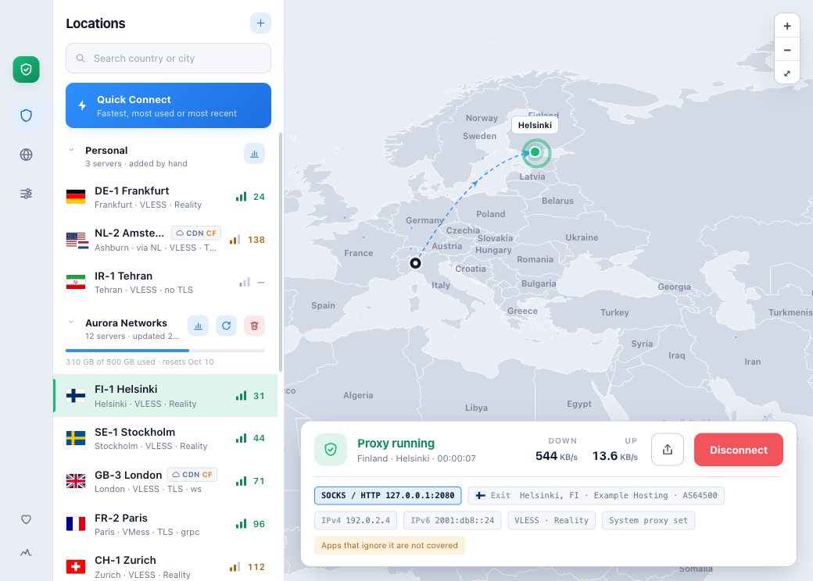
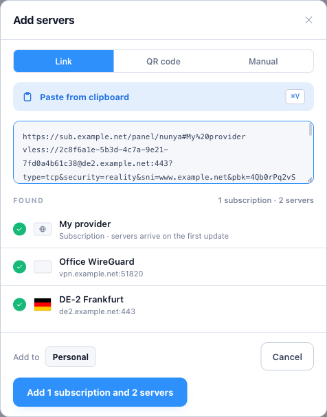
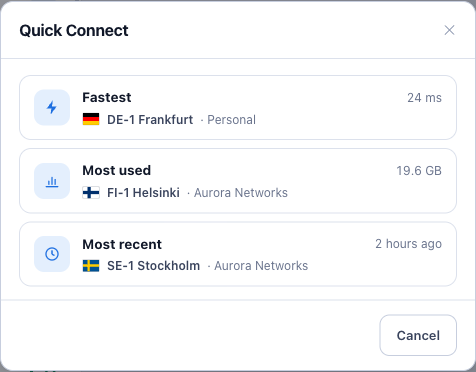
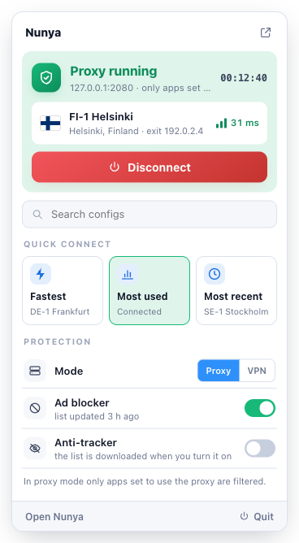
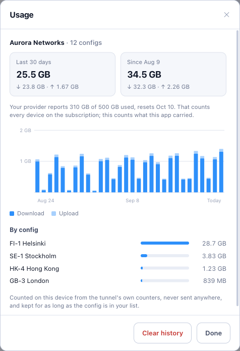
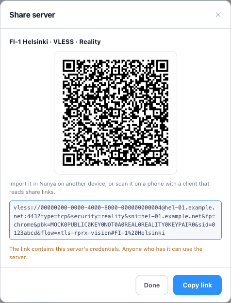
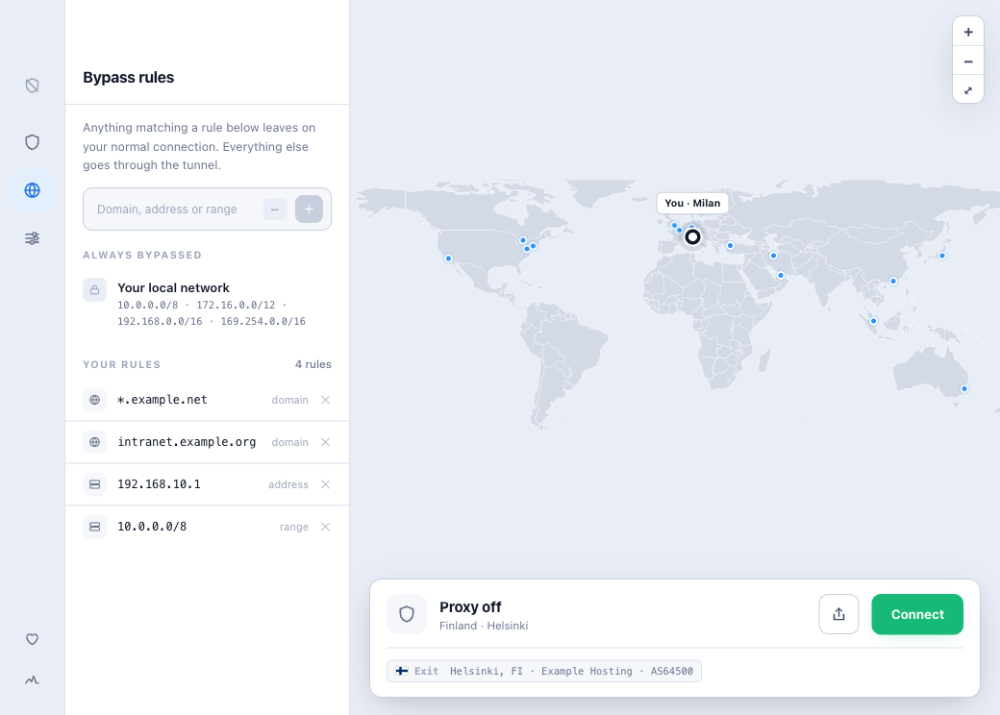

Safe
Never claims more than it covers. In proxy mode it tells you exactly which apps are covered, and which aren't.
Beta Free and open source
Nunya connects you through the VPN and proxy servers you already have — a link your provider sent, a subscription of hundreds, or a WireGuard config — and tests every one of them for real.

Five promises, and the app keeps each of them visibly.
Never claims more than it covers. In proxy mode it tells you exactly which apps are covered, and which aren't.
Every server is tested end to end. Quick Connect takes you to the fastest, the most used or the most recent.
A server only counts as working if traffic actually gets through. The shield turns red when nothing comes out.
No account and no telemetry. Your servers stay on your device, and the engine is a verified release.
Paste a link or a subscription, scan a QR code, and connect. That's the whole setup.
Everything you need day to day, and nothing pretending to be more than it is.
Press + and paste whatever your provider gave you. One paste can hold several things at once, and Nunya sorts them before anything is added.
vless://, vmess://, trojan://, wireguard://Anything Nunya can't run yet is named, with the reason — never silently dropped.

Each server is located by where its traffic really exits, not by its name. Relays and CDN-fronted servers are marked as such.

A shield in the macOS menu bar or the Linux top bar shows the state in the status colours — green connected, amber connecting, red not working, dimmed off.
On a Mac, click it for a panel with a big on/off button, Quick Connect, a search over your configs, the Proxy / VPN switch, and the ad blocker and anti-tracker.

The last 30 days and all time, a daily chart, and for a subscription each server's share — beside what your provider reports. Counted on your device only.

As a link or a QR code, or as a WireGuard config the official WireGuard apps can scan. A share link holds the server's credentials, so share it only with people you'd give access to.

A domain (with or without *.), an address, or a range such as 10.0.0.0/8 leaves on your normal connection. Your local network always does.

Switch any time from Settings or the menu-bar panel. Nunya says which one is covering you.
Opens a local SOCKS and HTTP port (2080 unless you change it). Apps you point at it go through the connection.
Carries all of the device's traffic through the tunnel. It needs system privileges, granted once through your system's own prompt.
.deb, .rpm or Arch package.Nunya is free software under the GPL-3.0. You can read every line of what it does.
Builds are published on GitHub Releases,
each with a SHA256SUMS to check your download against.
Apple Silicon · macOS 12 or later
Not yet signed by an Apple Developer account — see the first-launch step.
x86-64 · Windows 10 or later
Not yet code-signed — SmartScreen may ask once. Here's what to click.
Packages for the three big families
On ARM: arm64 .deb · aarch64 .rpm
Every release lists a SHA-256 for each file. Put SHA256SUMS next to what you downloaded, then run the line for your system. On Windows, compare the hash it prints with the one in the file.
shasum -a 256 -c SHA256SUMS --ignore-missingGet-FileHash .\Nunya_<version>_x64-setup.exe -Algorithm SHA256Pick your platform. Each step is the whole step — nothing hidden behind a link.
Nunya_<version>_aarch64.dmg and open it.VPN mode: the first time you connect in VPN mode, Nunya explains why and macOS asks for your administrator password. The password goes to macOS; Nunya never sees it.
Betas are offered too, unless you turn off Beta versions under Advanced → Updates. VPN mode asks for your password once more after each update. A copy older than the first self-updating version has to be replaced by hand, once.
rm -rf ~/Library/Application\ Support/com.nunyavpn.appNunya puts your own proxy setting back when it disconnects. If it was quit unexpectedly while connected, check System Settings → Network → (your network) → Details → Proxies.
Nunya_<version>_x64-setup.exe.VPN mode: when you first connect in VPN mode, Windows' own prompt restarts Nunya as administrator. To skip that step each time, right-click Nunya and choose Run as administrator. Use an account that is itself an administrator, so your servers come along.
Betas are offered unless you turn off Beta versions under Advanced → Updates. You can also install a newer setup .exe over the top at any time; your servers are kept.
Remove-Item -Recurse -Force "$env:APPDATA\com.nunyavpn.app", "$env:LOCALAPPDATA\com.nunyavpn.app" -ErrorAction SilentlyContinueDownload the package for your family, then from the folder it's in:
sudo apt install ./Nunya_<version>_amd64.debsudo dnf install ./Nunya-<version>-1.x86_64.rpmsudo pacman -U nunya-<version>-1-x86_64.pkg.tar.zstOn ARM, use the arm64.deb instead.
On ARM, use the aarch64.rpm instead. On openSUSE, use sudo zypper install with the same file.
An AUR package, nunya-bin, will follow once AUR registration reopens.
Tray icon: needs libayatana-appindicator3, and on GNOME the AppIndicator extension. Without it there's no icon, and closing the window quits Nunya.
VPN mode: needs polkit; your system asks for your password once.
On Linux your package manager updates Nunya, not the app itself. Download the newer package and install it over the old one:
sudo apt install ./Nunya_<version>_amd64.debsudo dnf install ./Nunya-<version>-1.x86_64.rpmsudo pacman -U nunya-<version>-1-x86_64.pkg.tar.zstYour servers and settings are kept. VPN mode asks for your password once more after each update, since the update replaces the tunnel engine.
Disconnect and quit Nunya, then:
sudo apt remove nunyasudo dnf remove nunyasudo pacman -R nunyaOptional — to remove your servers and settings as well:
rm -rf ~/.local/share/com.nunyavpn.appIf Nunya was quit unexpectedly while it had set the system proxy, reset it under your desktop's Settings → Network → Proxy.
No. Nunya is a client: it connects you through servers you already have, from your provider or your own. It has no servers, accounts or subscriptions of its own.
The beta isn't signed with a paid Apple Developer account or a Windows code-signing certificate yet. Check your download against SHA256SUMS, then follow the first-launch step in the install guide.
Proxy mode needs no password and covers apps that use the system proxy — Nunya tells you which aren't covered. VPN mode covers the whole device and asks for your system's permission once. When in doubt, use VPN mode.
Open Diagnostics — the pulse icon at the bottom of the left edge. It shows the engine's log, the connection's state, and the exact configuration the server runs with. Include it when you open an issue.
Donations are being set up through two channels only: Buy Me a Coffee and crypto wallets. They'll be listed in the README and the app's Support panel once they're open. Anyone asking for payment in Nunya's name anywhere else is not us.